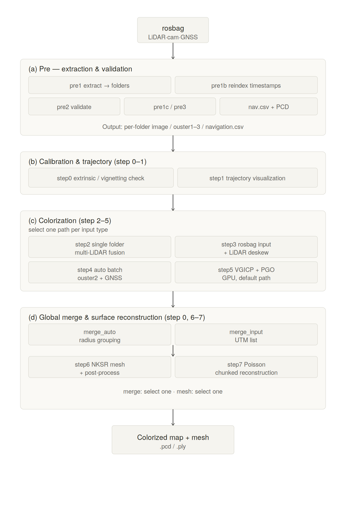
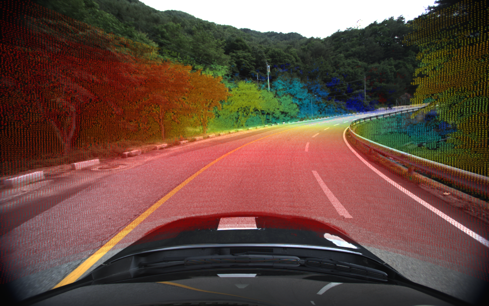
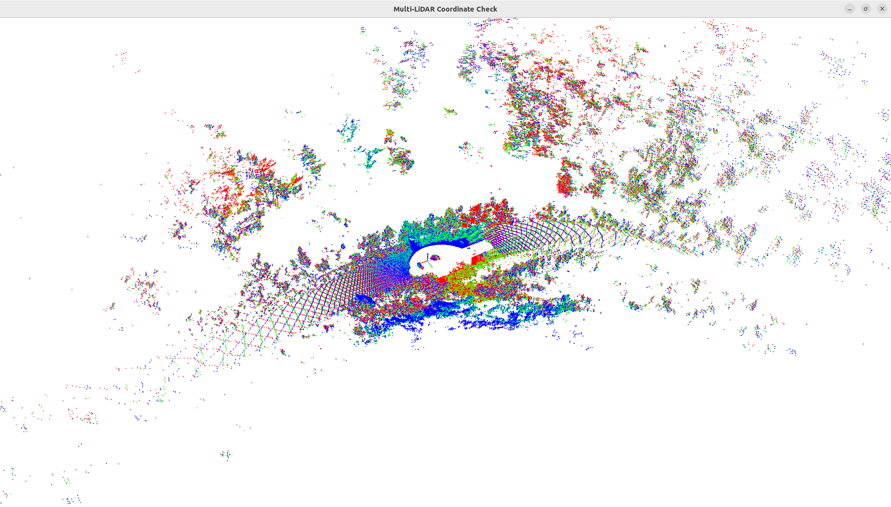
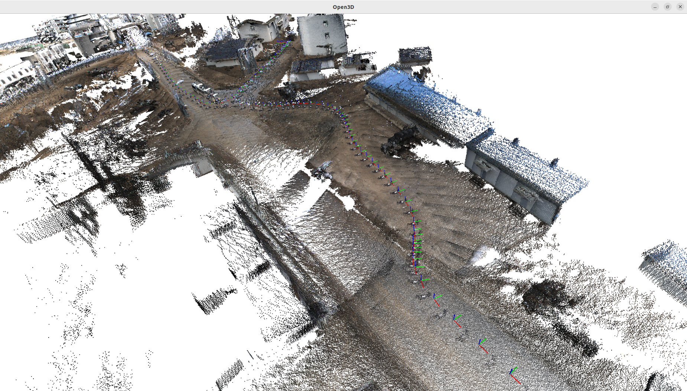
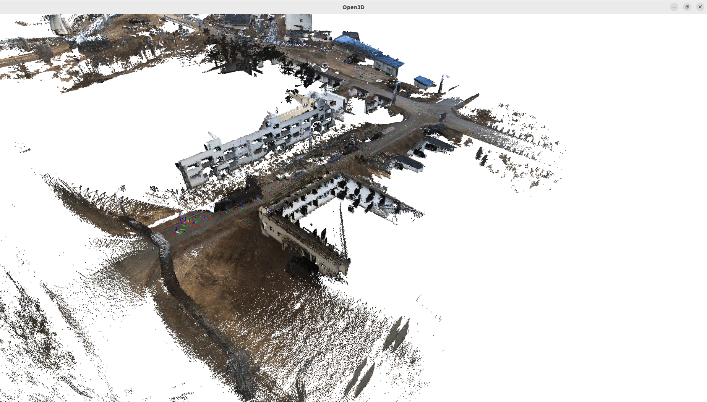
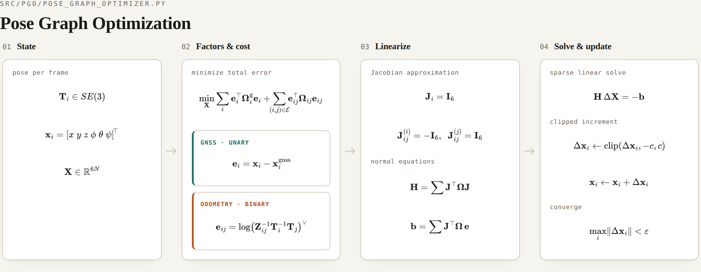
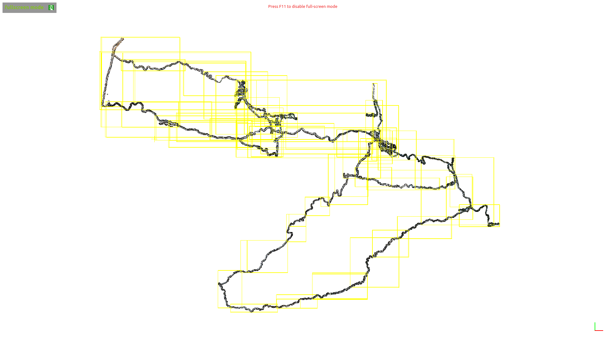
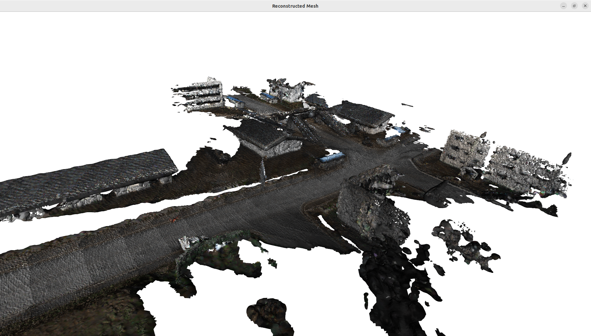

GNSS 기반 오프라인 3D Reconstruction 개발
GNSS-based Offline Colored 3D Reconstruction
3D ReconstructionGNSSMulti-LiDARColorizationVGICPPGO
Overview
본 연구는 다중 LiDAR(Ouster×3), 카메라(Blackfly), GNSS 센서를 탑재한 차량으로 수집한 rosbag 데이터를 입력받아, 컬러라이즈된 3D 포인트클라우드 맵과 메쉬를 생성하는 파이프라인을 구축하는 것을 목적으로 한다.
LiDAR 포인트에 카메라 색상을 투영하고 GNSS 궤적으로 글로벌 좌표계에 정합한 뒤, VGICP/PGO로 정밀도를 높이고 NKSR/Poisson으로 표면을 재구성한다. 전체 과정은 rosbag 추출, 검증 → 궤적 시각화 → 컬러라이즈 → 맵 병합, 메쉬화의 4단계로 모듈화되어 있다.

Scope참여 연구 항목
- LiDAR–Camera colorization
- GNSS/VGICP 기반 로컬 정합
- PGO 글로벌 정합
- 글로벌 맵 병합 및 메쉬 재구성
My Role
01멀티센서 캘리브레이션
- Camera–LiDAR extrinsic 캘리브레이션 후 투영 오버레이로 정합 검증
- 3대 LiDAR 간(LiDAR–LiDAR) 외부 캘리브레이션으로 좌표계 통합
- LiDAR–IMU 캘리브레이션으로 모션 보정(deskew) 기반 마련


02Local 정합 (GNSS/VGICP 기반)
- GNSS 항법 데이터로 초기 궤적(trajectory init) 생성
- 고정밀 GNSS(NovAtel CPT7)의 odometry를 초기값으로 사용해도 정밀 mapping이 가능할 것으로 판단했으나, 산간지역의 RTK 음영/오차 등으로 정확도 부족
- ICP 계열 알고리즘 도입 — 단순 ICP는 sparse/noisy 환경에서 local minima에 취약해, voxel 분포 기반 VGICP를 활용하여 local 정합 수행
- 프레임 간 정밀 정합으로 누적 오차 최소화


03Global 정합 (Pose Graph Optimization)
- Pose Graph Optimization(PGO)으로 global 정합 일관성 최적화
- UTM/Radius 기반 전역 맵 자동 병합으로 대규모 맵 구성
- 컬러라이즈 후 Poisson 표면 복원으로 메쉬 생성
- 정량 성과 — 14km × 10km 대규모 구간 컬러 3D 복원


